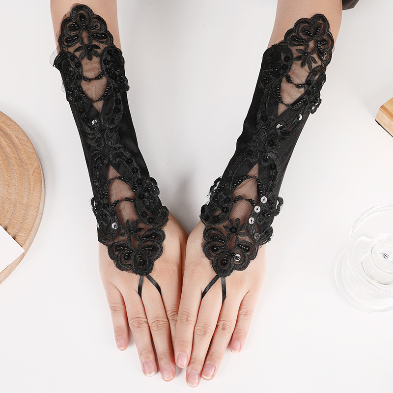
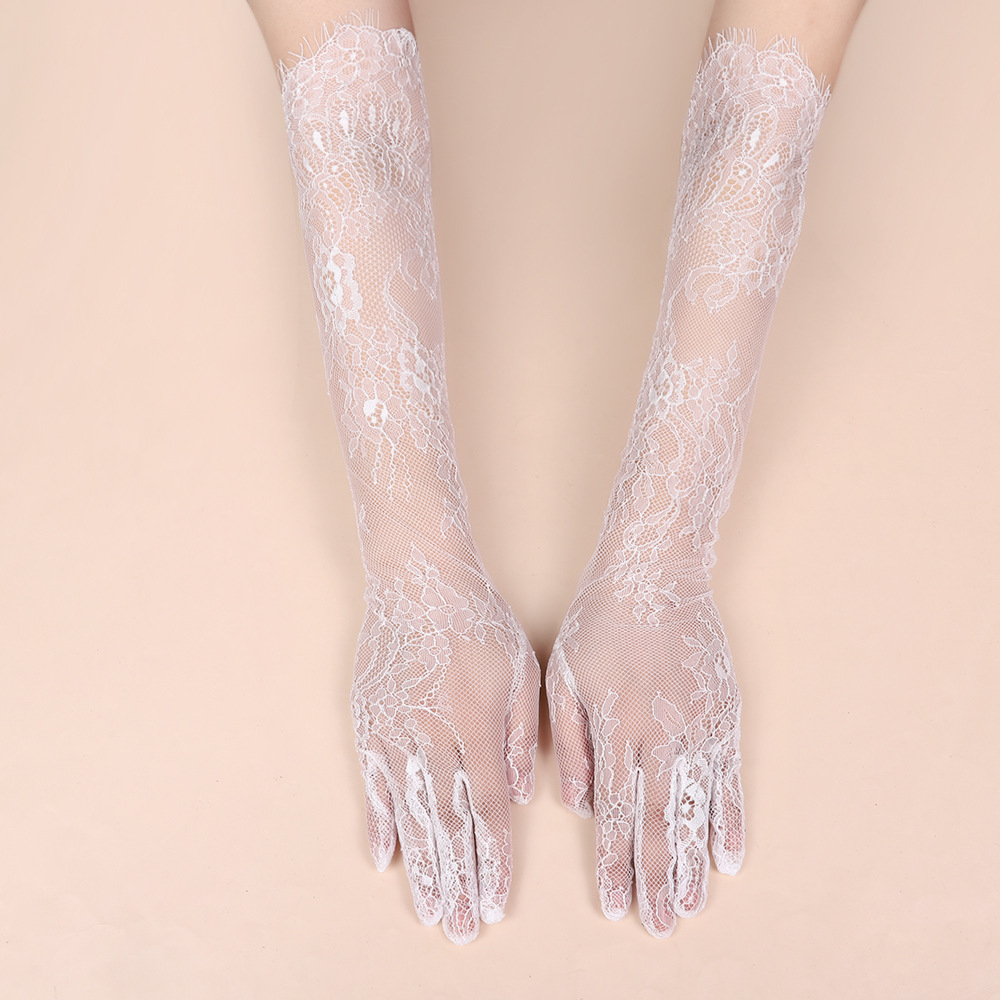
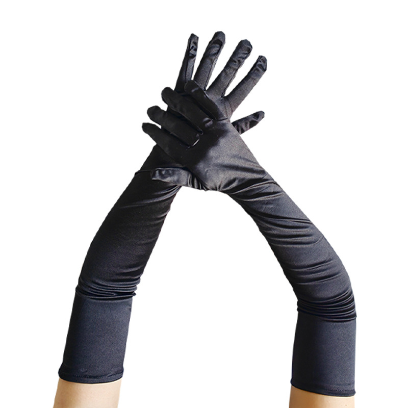
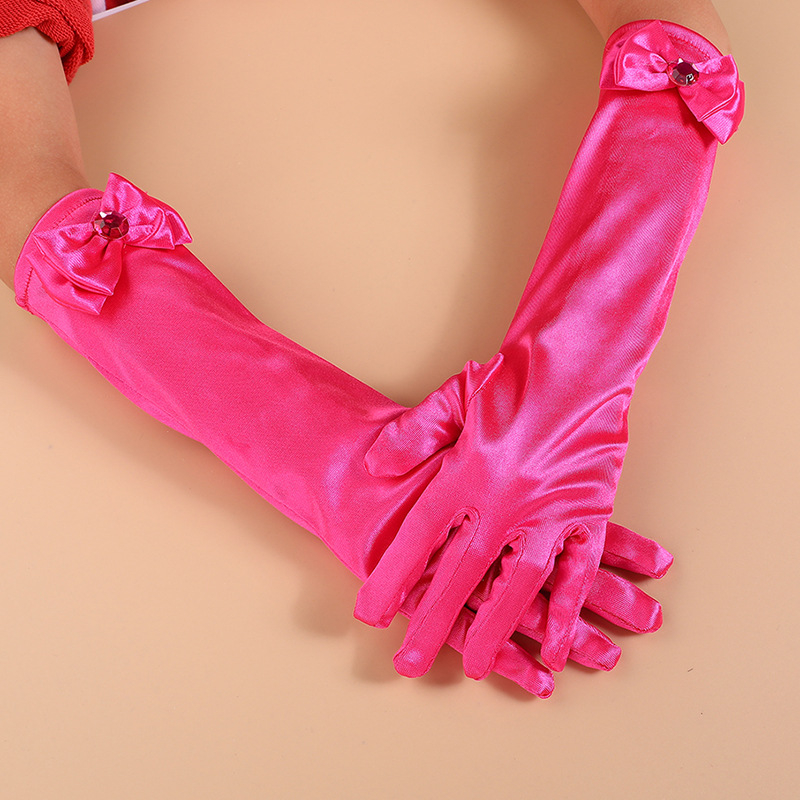
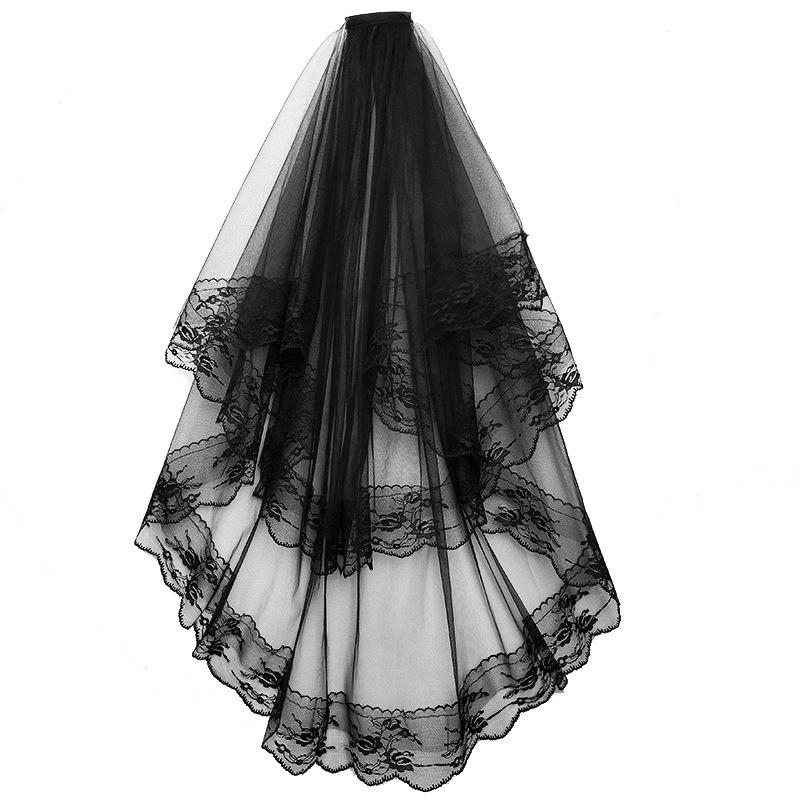
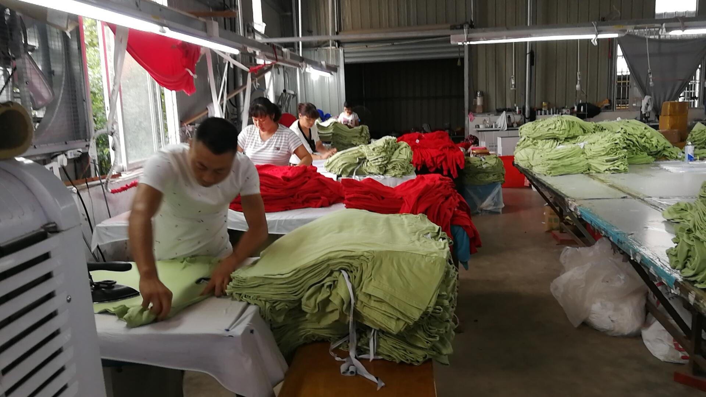
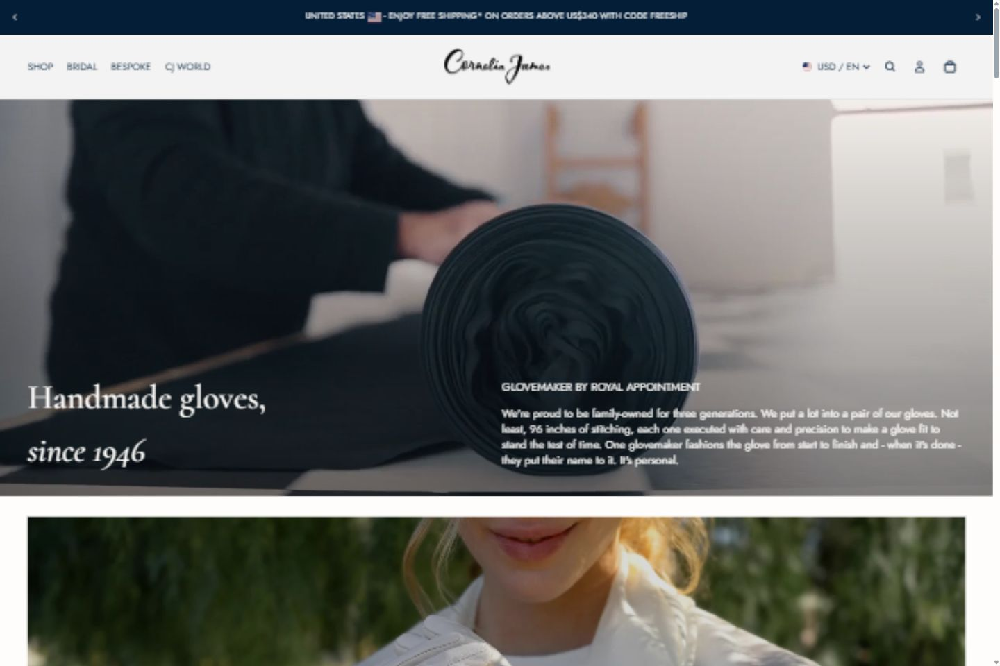
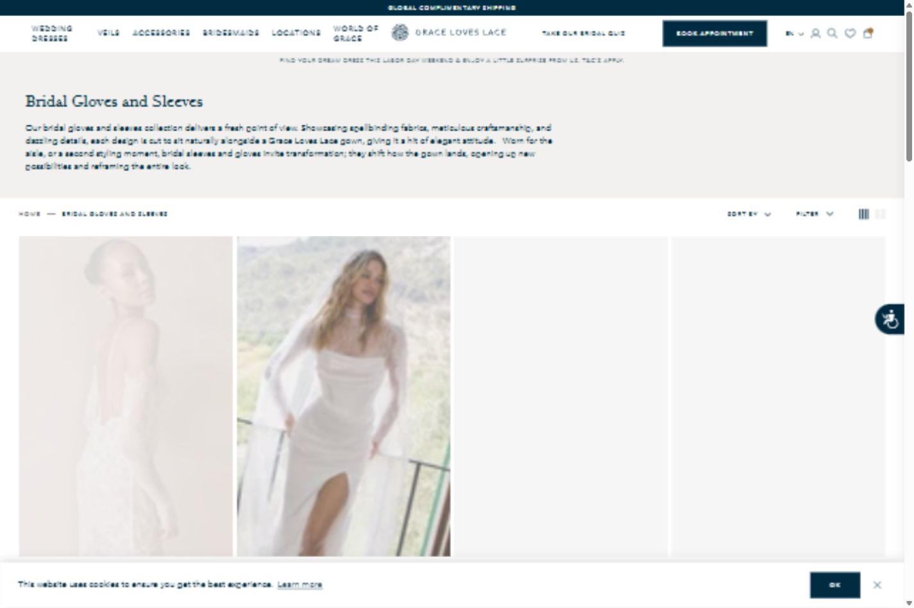
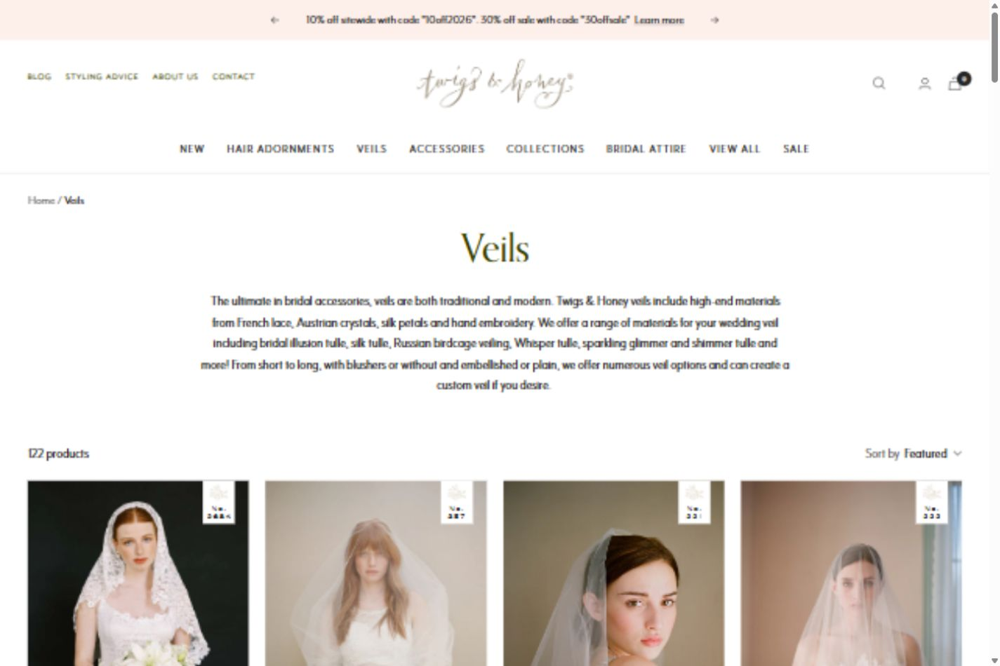
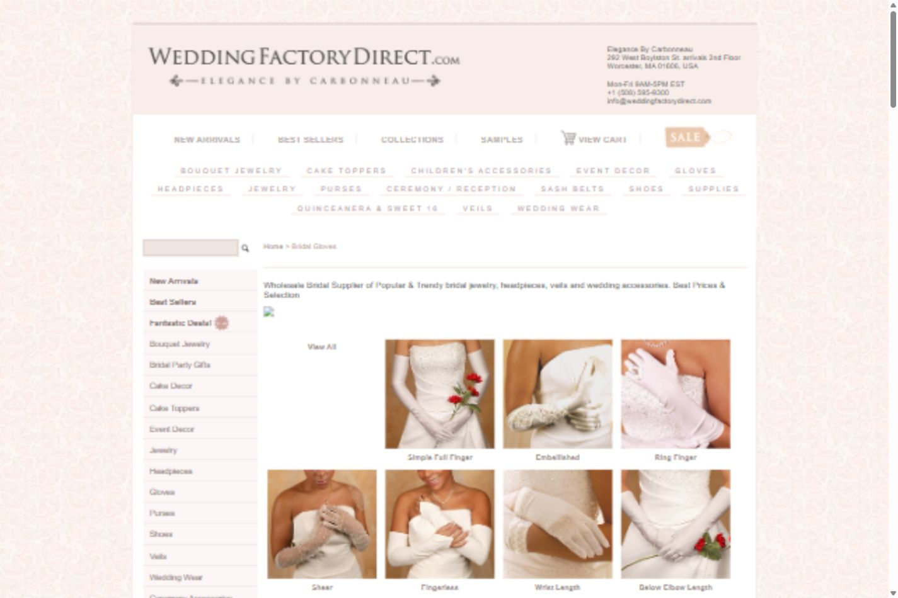

Editorial utility, grounded in real material.
A bounded reference board for a manufacturer-facing catalogue. All supplied product and factory images are local research copies with REQUIRES_PERMISSION_CONFIRMATION; none are production-approved.
Typography references
Occasion
Gloves
Expressive serif display with compact sans labels. Recommended for the hero and collection titles.
Clear sourcing
language
Sans-first utility copy keeps family navigation and RFQ steps easy to scan.
Quiet labels
Small uppercase metadata works as wayfinding, never as decorative badges or fake metrics.
Palette and CTA
#F7F5F1
#201E1C
#8B3F35
#D9D3CA
Warm paper is restrained, not beige-heavy: pair it with ink, a single terracotta action color, and generous white image space.
Approved-candidate image roles






Composition cues
Hero
Image-led crop or split copy/image. Keep one clear H1 and one RFQ action; avoid centred SaaS hero chrome.
Collection grid
Stable 4:5 product frames, 3–4 columns desktop, two on mobile. Metadata is factual or visibly fixture-only.
Trust + RFQ
Transition from product texture to workshop evidence, then a quiet full-width enquiry band. No invented factory numbers.
Competitor evidence




Full source list and decomposition table: PHASE_3_VISUAL_BENCHMARK.md. Screenshots are RESEARCH_ONLY and remain outside production imagery.
Do / don't
Do
Use real texture, consistent crops, serif/sans contrast, five-family wayfinding, compact cards, and a visible RFQ path.
Don't
Use stock or AI factory photos, marketplace/ecommerce chrome, price or inventory, over-rounded card stacks, PPE-industrial styling, or bridal mood without buyer clarity.